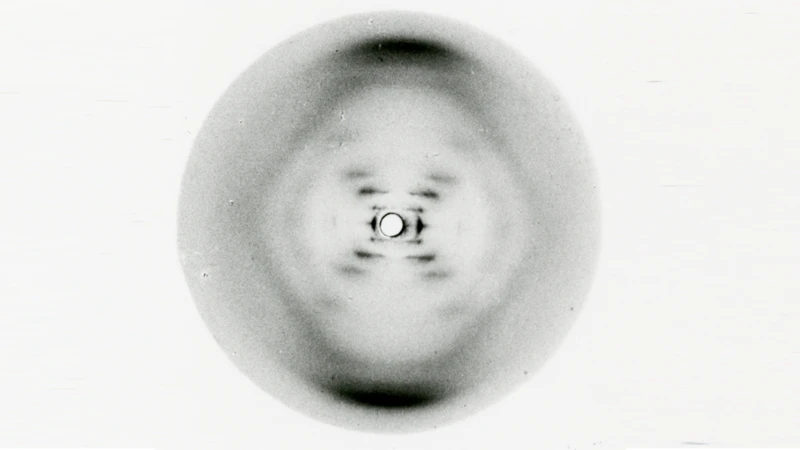

A Foto 51 e o DNA
A contribuição mais famosa de Rosalind foi a Foto 51. Revelou, pela primeira vez, a estrutura em forma de hélice do DNA.

Sem essa imagem, os cientistas não teriam conseguido montar o modelo do DNA que conhecemos hoje.
"A ciência e a vida cotidiana não podem e não devem ser separadas." — Rosalind Franklin
Outras Grandes Descobertas
- Vírus do Mosaico do Tabaco
- Estrutura do Carvão
- Grafite